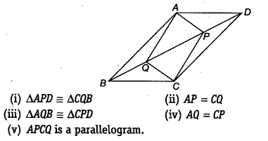
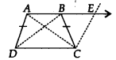
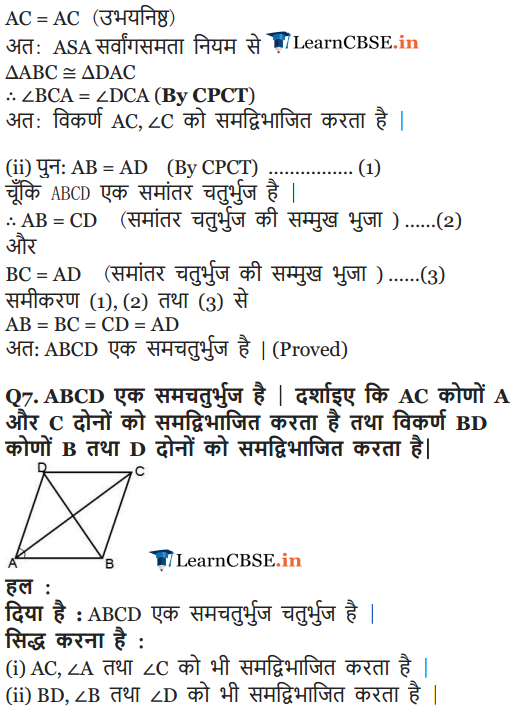

NCERT Solutions for Class 9 Maths Chapter 8 Quadrilaterals Ex 8.1 are part of NCERT Solutions for Class 9 Maths. Here we have given NCERT Solutions for Class 9 Maths Chapter 8 Quadrilaterals Ex 8.1.
NCERT Solutions for Class 9 Maths Chapter 8 Quadrilaterals Ex 8.1
Ex 8.1 Class 9 Maths Question 1.
The angles of quadrilateral are in the ratio 3 : 5 : 9 : 13. Find all the angles of the quadrilateral.
Solution:
Let the angles of the quadrilateral be 3x, 5x, 9x and 13x.
∴ 3x + 5x + 9x + 13x = 360°
[Angle sum property of a quadrilateral]
⇒ 30x = 360°
⇒ x = \(\frac { { 360 }^{ \circ } }{ 30 } \) = 12°
∴ 3x = 3 x 12° = 36°
5x = 5 x 12° = 60°
9x = 9 x 12° = 108°
13a = 13 x 12° = 156°
⇒ The required angles of the quadrilateral are 36°, 60°, 108° and 156°.
Ex 8.1 Class 9 Maths Question 2.
If the diagonals of a parallelogram are equal, then show that it is a rectangle.
Solution:
Let ABCD is a parallelogram such that AC = BD.
In ∆ABC and ∆DCB,
AC = DB [Given]
AB = DC [Opposite sides of a parallelogram]
BC = CB [Common]
∴ ∆ABC ≅ ∆DCB [By SSS congruency]
⇒ ∠ABC = ∠DCB [By C.P.C.T.] …(1)
Now, AB || DC and BC is a transversal. [ ∵ ABCD is a parallelogram]
∴ ∠ABC + ∠DCB = 180° … (2) [Co-interior angles]
From (1) and (2), we have
∠ABC = ∠DCB = 90°
i.e., ABCD is a parallelogram having an angle equal to 90°.
∴ ABCD is a rectangle.
Ex 8.1 Class 9 Maths Question 3.
Show that if the diagonals of a quadrilateral bisect each other at right angles, then it is a rhombus.
Solution:
Let ABCD be a quadrilateral such that the diagonals AC and BD bisect each other at right angles at O.
∴ In ∆AOB and ∆AOD, we have
AO = AO [Common]
OB = OD [O is the mid-point of BD]
∠AOB = ∠AOD [Each 90]
∴ ∆AQB ≅ ∆AOD [By,SAS congruency
∴ AB = AD [By C.P.C.T.] ……..(1)
Similarly, AB = BC .. .(2)
BC = CD …..(3)
CD = DA ……(4)
∴ From (1), (2), (3) and (4), we have
AB = BC = CD = DA
Thus, the quadrilateral ABCD is a rhombus.
Alternatively : ABCD can be proved first a parallelogram then proving one pair of adjacent sides equal will result in rhombus.
Ex 8.1 Class 9 Maths Question 4.
Show that the diagonals of a square are equal and bisect each other at right angles.
Solution:
Let ABCD be a square such that its diagonals AC and BD intersect at O.
(i) To prove that the diagonals are equal, we need to prove AC = BD.
In ∆ABC and ∆BAD, we have
AB = BA [Common]
BC = AD [Sides of a square ABCD]
∠ABC = ∠BAD [Each angle is 90°]
∴ ∆ABC ≅ ∆BAD [By SAS congruency]
AC = BD [By C.P.C.T.] …(1)
(ii) AD || BC and AC is a transversal. [∵ A square is a parallelogram]
∴ ∠1 = ∠3
[Alternate interior angles are equal]
Similarly, ∠2 = ∠4
Now, in ∆OAD and ∆OCB, we have
AD = CB [Sides of a square ABCD]
∠1 = ∠3 [Proved]
∠2 = ∠4 [Proved]
∴ ∆OAD ≅ ∆OCB [By ASA congruency]
⇒ OA = OC and OD = OB [By C.P.C.T.]
i.e., the diagonals AC and BD bisect each other at O. …….(2)
(iii) In ∆OBA and ∆ODA, we have
OB = OD [Proved]
BA = DA [Sides of a square ABCD]
OA = OA [Common]
∴ ∆OBA ≅ ∆ODA [By SSS congruency]
⇒ ∠AOB = ∠AOD [By C.P.C.T.] …(3)
∵ ∠AOB and ∠AOD form a linear pair.
∴∠AOB + ∠AOD = 180°
∴∠AOB = ∠AOD = 90° [By(3)]
⇒ AC ⊥ BD …(4)
From (1), (2) and (4), we get AC and BD are equal and bisect each other at right angles.
Ex 8.1 Class 9 Maths Question 5.
Show that if the diagonals of a quadrilateral are equal and bisect each other at right angles, then it is a square.
Solution:
Let ABCD be a quadrilateral such that diagonals AC and BD are equal and bisect each other at right angles.
Now, in ∆AOD and ∆AOB, We have
∠AOD = ∠AOB [Each 90°]
AO = AO [Common]
OD = OB [ ∵ O is the midpoint of BD]
∴ ∆AOD ≅ ∆AOB [By SAS congruency]
⇒ AD = AB [By C.P.C.T.] …(1)
Similarly, we have
AB = BC … (2)
BC = CD …(3)
CD = DA …(4)
From (1), (2), (3) and (4), we have
AB = BC = CD = DA
∴ Quadrilateral ABCD have all sides equal.
In ∆AOD and ∆COB, we have
AO = CO [Given]
OD = OB [Given]
∠AOD = ∠COB [Vertically opposite angles]
So, ∆AOD ≅ ∆COB [By SAS congruency]
∴∠1 = ∠2 [By C.P.C.T.]
But, they form a pair of alternate interior angles.
∴ AD || BC
Similarly, AB || DC
∴ ABCD is a parallelogram.
∴ Parallelogram having all its sides equal is a rhombus.
∴ ABCD is a rhombus.
Now, in ∆ABC and ∆BAD, we have
AC = BD [Given]
BC = AD [Proved]
AB = BA [Common]
∴ ∆ABC ≅ ∆BAD [By SSS congruency]
∴ ∠ABC = ∠BAD [By C.P.C.T.] ……(5)
Since, AD || BC and AB is a transversal.
∴∠ABC + ∠BAD = 180° .. .(6) [ Co – interior angles]
⇒ ∠ABC = ∠BAD = 90° [By(5) & (6)]
So, rhombus ABCD is having one angle equal to 90°.
Thus, ABCD is a square.
Ex 8.1 Class 9 Maths Question 6.
Diagonal AC of a parallelogram ABCD bisects ∠A (see figure). Show that
(i) it bisects ∠C also,
(ii) ABCD is a rhombus.
Solution:
We have a parallelogram ABCD in which diagonal AC bisects ∠A
⇒ ∠DAC = ∠BAC
(i) Since, ABCD is a parallelogram.
∴ AB || DC and AC is a transversal.
∴ ∠1 = ∠3 …(1)
[ ∵ Alternate interior angles are equal]
Also, BC || AD and AC is a transversal.
∴ ∠2 = ∠4 …(2)
[ v Alternate interior angles are equal]
Also, ∠1 = ∠2 …(3)
[ ∵ AC bisects ∠A]
From (1), (2) and (3), we have
∠3 = ∠4
⇒ AC bisects ∠C.
(ii) In ∆ABC, we have
∠1 = ∠4 [From (2) and (3)]
⇒ BC = AB …(4)
[ ∵ Sides opposite to equal angles of a ∆ are equal]
Similarly, AD = DC ……..(5)
But, ABCD is a parallelogram. [Given]
∴ AB = DC …(6)
From (4), (5) and (6), we have
AB = BC = CD = DA
Thus, ABCD is a rhombus.
Ex 8.1 Class 9 Maths Question 7.
ABCD is a rhombus. Show that diagonal AC bisects ∠Aas well as ∠C and diagonal BD bisects ∠B as well AS ∠D.
Solution:
Since, ABCD is a rhombus.
⇒ AB = BC = CD = DA
Also, AB || CD and AD || BC
Now, CD = AD ⇒ ∠1 = ∠2 …….(1)
[ ∵ Angles opposite to equal sides of a triangle are equal]
Also, AD || BC and AC is the transversal.
[ ∵ Every rhombus is a parallelogram]
⇒ ∠1 = ∠3 …(2)
[ ∵ Alternate interior angles are equal]
From (1) and (2), we have
∠2 = ∠3 …(3)
Since, AB || DC and AC is transversal.
∴ ∠2 = ∠4 …(4)
[ ∵ Alternate interior angles are equal] From (1) and (4),
we have ∠1 = ∠4
∴ AC bisects ∠C as well as ∠A.
Similarly, we can prove that BD bisects ∠B as well as ∠D.
Ex 8.1 Class 9 Maths Question 8.
ABCD is a rectangle in which diagonal AC bisects ∠A as well as ∠C. Show that
(i) ABCD is a square
(ii) diagonal BD bisects ∠B as well as ∠D.
Solution:
We have a rectangle ABCD such that AC bisects ∠A as well as ∠C.
i.e., ∠1 = ∠4 and ∠2 = ∠3 ……..(1)
(i) Since, every rectangle is a parallelogram.
∴ ABCD is a parallelogram.
⇒ AB || CD and AC is a transversal.
∴∠2 = ∠4 …(2)
[ ∵ Alternate interior angles are equal]
From (1) and (2), we have
∠3 = ∠4
In ∆ABC, ∠3 = ∠4
⇒ AB = BC
[ ∵ Sides opposite to equal angles of a A are equal]
Similarly, CD = DA
So, ABCD is a rectangle having adjacent sides equal.
⇒ ABCD is a square.
(ii) Since, ABCD is a square and diagonals of a square bisect the opposite angles.
So, BD bisects ∠B as well as ∠D.
Ex 8.1 Class 9 Maths Question 9.
In parallelogram ABCD, two points P and Q are taken on diagonal BD such that DP = BQ (see figure). Show that

Solution:
We have a parallelogram ABCD, BD is the diagonal and points P and Q are such that PD = QB
(i) Since, AD || BC and BD is a transversal.
∴ ∠ADB = ∠CBD [ ∵ Alternate interior angles are equal]
⇒ ∠ADP = ∠CBQ
Now, in ∆APD and ∆CQB, we have
AD = CB [Opposite sides of a parallelogram ABCD are equal]
PD = QB [Given]
∠ADP = ∠CBQ [Proved]
∴ ∆APD ≅ ∆CQB [By SAS congruency]
(ii) Since, ∆APD ≅ ∆CQB [Proved]
⇒ AP = CQ [By C.P.C.T.]
(iii) Since, AB || CD and BD is a transversal.
∴ ∠ABD = ∠CDB
⇒ ∠ABQ = ∠CDP
Now, in ∆AQB and ∆CPD, we have
QB = PD [Given]
∠ABQ = ∠CDP [Proved]
AB = CD [ Y Opposite sides of a parallelogram ABCD are equal]
∴ ∆AQB = ∆CPD [By SAS congruency]
(iv) Since, ∆AQB = ∆CPD [Proved]
⇒ AQ = CP [By C.P.C.T.]
(v) In a quadrilateral ∆PCQ,
Opposite sides are equal. [Proved]
∴ ∆PCQ is a parallelogram.
Ex 8.1 Class 9 Maths Question 10.
ABCD is a parallelogram and AP and CQ are perpendiculars from vertices A and C on diagonal BD (see figure). Show that
Solution:
(i) In ∆APB and ∆CQD, we have
∠APB = ∠CQD [Each 90°]
AB = CD [ ∵ Opposite sides of a parallelogram ABCD are equal]
∠ABP = ∠CDQ
[ ∵ Alternate angles are equal as AB || CD and BD is a transversal]
∴ ∆APB = ∆CQD [By AAS congruency]
(ii) Since, ∆APB ≅ ∆CQD [Proved]
⇒ AP = CQ [By C.P.C.T.]
Ex 8.1 Class 9 Maths Question 11.
In ∆ABC and ∆DEF, AB = DE, AB || DE, BC – EF and BC || EF. Vertices A, B and C are joined to vertices D, E and F, respectively (see figure).
Show that
(i) quadrilateral ABED is a parallelogram
(ii) quadrilateral BEFC is a parallelogram

(iii) AD || CF and AD = CF
(iv) quadrilateral ACFD is a parallelogram
(v) AC = DF
(vi) ∆ABC ≅ ∆DEF
Solution:
(i) We have AB = DE [Given]
and AB || DE [Given]
i. e., ABED is a quadrilateral in which a pair of opposite sides (AB and DE) are parallel and of equal length.
∴ ABED is a parallelogram.
(ii) BC = EF [Given]
and BC || EF [Given]
i.e. BEFC is a quadrilateral in which a pair of opposite sides (BC and EF) are parallel and of equal length.
∴ BEFC is a parallelogram.
(iii) ABED is a parallelogram [Proved]
∴ AD || BE and AD = BE …(1)
[ ∵ Opposite sides of a parallelogram are equal and parallel] Also, BEFC is a parallelogram. [Proved]
BE || CF and BE = CF …(2)
[ ∵ Opposite sides of a parallelogram are equal and parallel]
From (1) and (2), we have
AD || CF and AD = CF
(iv) Since, AD || CF and AD = CF [Proved]
i.e., In quadrilateral ACFD, one pair of opposite sides (AD and CF) are parallel and of equal length.
∴Quadrilateral ACFD is a parallelogram.
(v) Since, ACFD is a parallelogram. [Proved]
So, AC =DF [∵ Opposite sides of a parallelogram are equal]
(vi) In ∆ABC and ∆DFF, we have
AB = DE [Given]
BC = EF [Given]
AC = DE [Proved in (v) part]
∆ABC ≅ ∆DFF [By SSS congruency]
Ex 8.1 Class 9 Maths Question 12.
ABCD is a trapezium in which AB || CD and AD = BC (see figure). Show that
(i )∠A=∠B
(ii )∠C=∠D
(iii) ∆ABC ≅ ∆BAD
(iv) diagonal AC = diagonal BD
[Hint: Extend AB and draw a line through C parallel to DA intersecting AB produced at E].
Solution:
We have given a trapezium ABCD in which AB || CD and AD = BC.
(i) Produce AB to E and draw CF || AD.. .(1)

∵ AB || DC
⇒ AE || DC Also AD || CF
∴ AECD is a parallelogram.
⇒ AD = CE …(1)
[ ∵ Opposite sides of the parallelogram are equal]
But AD = BC …(2) [Given]
By (1) and (2), BC = CF
Now, in ∆BCF, we have BC = CF
⇒ ∠CEB = ∠CBE …(3)
[∵ Angles opposite to equal sides of a triangle are equal]
Also, ∠ABC + ∠CBE = 180° … (4)
[Linear pair]
and ∠A + ∠CEB = 180° …(5)
[Co-interior angles of a parallelogram ADCE]
From (4) and (5), we get
∠ABC + ∠CBE = ∠A + ∠CEB
⇒ ∠ABC = ∠A [From (3)]
⇒ ∠B = ∠A …(6)
(ii) AB || CD and AD is a transversal.
∴ ∠A + ∠D = 180° …(7) [Co-interior angles]
Similarly, ∠B + ∠C = 180° … (8)
From (7) and (8), we get
∠A + ∠D = ∠B + ∠C
⇒ ∠C = ∠D [From (6)]
(iii) In ∆ABC and ∆BAD, we have
AB = BA [Common]
BC = AD [Given]
∠ABC = ∠BAD [Proved]
∴ ∆ABC = ∆BAD [By SAS congruency]
(iv) Since, ∆ABC = ∆BAD [Proved]
⇒ AC = BD [By C.P.C.T.]
NCERT Solutions for Class 9 Maths Chapter 8 Quadrilaterals (चतुर्भुज) (Hindi Medium) Ex 8.1




NCERT Solutions for Class 9 Maths Chapter 8 Quadrilaterals Ex 8.2
Question 1.
ABCD is a quadrilateral in which P, Q, R and S are mid-points of the sides AB, BC, CD and DA (see figure). AC is a diagonal. Show that
(i) SR || AC and SR = \(\frac { 1 }{ 2 }\) AC
(ii) PQ = SR
(iii) PQRS is a parallelogram.
Solution:
(i) In ∆ACD, We have
∴ S is the mid-point of AD and R is the mid-point of CD.
SR = \(\frac { 1 }{ 2 }\)AC and SR || AC …(1)
[By mid-point theorem]
(ii) In ∆ABC, P is the mid-point of AB and Q is the mid-point of BC.
PQ = \(\frac { 1 }{ 2 }\)AC and PQ || AC …(2)
[By mid-point theorem]
From (1) and (2), we get
PQ = \(\frac { 1 }{ 2 }\)AC = SR and PQ || AC || SR
⇒ PQ = SR and PQ || SR
(iii) In a quadrilateral PQRS,
PQ = SR and PQ || SR [Proved]
∴ PQRS is a parallelogram.
Question 2.
ABCD is a rhombus and P, Q, R and S are the mid-points of the sides AB, BC, CD and DA, respectively. Show that the quadrilateral PQRS is a rectangle.
Solution:
We have a rhombus ABCD and P, Q, R and S are the mid-points of the sides AB, BC, CD and DA respectively. Join AC.

In ∆ABC, P and Q are the mid-points of AB and BC respectively.
∴ PQ = \(\frac { 1 }{ 2 }\)AC and PQ || AC …(1)
[By mid-point theorem]
In ∆ADC, R and S are the mid-points of CD and DA respectively.
∴ SR = \(\frac { 1 }{ 2 }\)AC and SR || AC …(2)
[By mid-point theorem]
From (1) and (2), we get
PQ = \(\frac { 1 }{ 2 }\)AC = SR and PQ || AC || SR
⇒ PQ = SR and PQ || SR
∴ PQRS is a parallelogram. …….(3)
Now, in ∆ERC and ∆EQC,
∠1 = ∠2
[ ∵ The diagonals of a rhombus bisect the opposite angles]
CR = CQ [ ∵\(\frac { CD }{ 2 }\) = \(\frac { BC }{ 2 }\)]
CE = CE [Common]
∴ ∆ERC ≅ ∆EQC [By SAS congruency]
⇒ ∠3 = ∠4 …(4) [By C.P.C.T.]
But ∠3 + ∠4 = 180° ……(5) [Linear pair]
From (4) and (5), we get
⇒ ∠3 = ∠4 = 90°
Now, ∠RQP = 180° – ∠b [ Y Co-interior angles for PQ || AC and EQ is transversal]
But ∠5 = ∠3
[ ∵ Vertically opposite angles are equal]
∴ ∠5 = 90°
So, ∠RQP = 180° – ∠5 = 90°
∴ One angle of parallelogram PQRS is 90°.
Thus, PQRS is a rectangle.
Question 3.
ABCD is a rectangle and P, Q, R ans S are mid-points of the sides AB, BC, CD and DA, respectively. Show that the quadrilateral PQRS is a rhombus.
Solution:
We have,
Now, in ∆ABC, we have
PQ = \(\frac { 1 }{ 2 }\)AC and PQ || AC …(1)
[By mid-point theorem]
Similarly, in ∆ADC, we have
SR = \(\frac { 1 }{ 2 }\)AC and SR || AC …(2)
From (1) and (2), we get
PQ = SR and PQ || SR
∴ PQRS is a parallelogram.
Now, in ∆PAS and ∆PBQ, we have
∠A = ∠B [Each 90°]
AP = BP [ ∵ P is the mid-point of AB]
AS = BQ [∵ \(\frac { 1 }{ 2 }\)AD = \(\frac { 1 }{ 2 }\)BC]
∴ ∆PAS ≅ ∆PBQ [By SAS congruency]
⇒ PS = PQ [By C.P.C.T.]
Also, PS = QR and PQ = SR [∵opposite sides of a parallelogram are equal]
So, PQ = QR = RS = SP i.e., PQRS is a parallelogram having all of its sides equal.
Hence, PQRS is a rhombus.
Question 4.
ABCD is a trapezium in which AB || DC, BD is a diagonal and E is the mid-point of AD. A line is drawn through E parallel to AB intersecting BC at F (see figure). Show that F is the mid-point of BC.

Solution:
We have,
In ∆DAB, we know that E is the mid-point of
AD and EG || AB [∵ EF || AB]
Using the converse of mid-point theorem, we get, G is the mid-point of BD.
Again in ABDC, we have G is the midpoint of BD and GF || DC.
[∵ AB || DC and EF || AB and GF is a part of EF]
Using the converse of the mid-point theorem, we get, F is the mid-point of BC.
Question 5.
In a parallelogram ABCD, E and F are the mid-points of sides AB and CD respectively (see figure). Show that the line segments AF and EC trisect the diagonal BD.
Solution:
Since, the opposite sides of a parallelogram are parallel and equal.
∴ AB || DC
⇒ AE || FC …(1)
and AB = DC
⇒ \(\frac { 1 }{ 2 }\)AB = \(\frac { 1 }{ 2 }\)DC
⇒ AE = FC …(2)
From (1) and (2), we have
AE || PC and AE = PC
∴ ∆ECF is a parallelogram.
Now, in ∆DQC, we have F is the mid-point of DC and FP || CQ
[∵ AF || CE]
⇒ DP = PQ …(3)
[By converse of mid-point theorem] Similarly, in A BAP, E is the mid-point of AB and EQ || AP [∵AF || CE]
⇒ BQ = PQ …(4)
[By converse of mid-point theorem]
∴ From (3) and (4), we have
DP = PQ = BQ
So, the line segments AF and EC trisect the diagonal BD.
Question 6.
Show that the line segments joining the mid-points of the opposite sides of a quadrilateral bisect each other.
Solution:
Let ABCD be a quadrilateral, where P, Q, R and S are the mid-points of the sides AB, BC, CD and DA respectively.
Join PQ, QR, RS and SP.
Let us also join PR, SQ and AC.
Now, in ∆ABC, we have P and Q are the mid-points of its sides AB and BC respectively.
∴ PQ || AC and PQ = \(\frac { 1 }{ 2 }\) AC …(1)
[By mid-point theorem]
Similarly, RS || AC and RS = \(\frac { 1 }{ 2 }\)AC …(2)
∴ By (1) and (2), we get
PQ || RS, PQ = RS
∴ PQRS is a parallelogram.
And the diagonals of a parallelogram bisect each other, i.e., PR and SQ bisect each other. Thus, the line segments joining the midpoints of opposite sides of a quadrilateral ABCD bisect each other.
Question 7.
ABC is a triangle right angled at C. A line through the mid-point M of hypotenuse AB and parallel to BC intersects AC at D. Show that
(i) D is the mid-point of AC
(ii) MD ⊥ AC
(iii) CM = MA = \(\frac { 1 }{ 2 }\)AB
Solution:
we have
(i) In ∆ACB, We have
M is the mid-point of AB. [Given]
MD || BC , [Given]
∴ Using the converse of mid-point theorem,
D is the mid-point of AC.
(ii) Since, MD || BC and AC is a transversal.
∠MDA = ∠BCA
[ ∵ Corresponding angles are equal] As
∠BCA = 90° [Given]
∠MDA = 90°
⇒ MD ⊥AC.
(iii) In ∆ADM and ∆CDM, we have
∠ADM = ∠CDM [Each equal to 90°]
MD = MD [Common]
AD = CD [∵ D is the mid-point of AC]
∴ ∆ADM ≅ ∆CDM [By SAS congruency]
⇒ MA = MC [By C.P.C.T.] .. .(1)
∵ M is the mid-point of AB [Given]
MA = \(\frac { 1 }{ 2 }\)AB …(2)
From (1) and (2), we have
CM = MA = \(\frac { 1 }{ 2 }\)AB
NCERT Solutions for Class 9 Maths
- Chapter 1 Number systems
- Chapter 2 Polynomials
- Chapter 3 Coordinate Geometry
- Chapter 4 Linear Equations in Two Variables
- Chapter 5 Introduction to Euclid Geometry
- Chapter 6 Lines and Angles
- Chapter 7 Triangles
- Chapter 8 Quadrilaterals
- Chapter 9 Areas of Parallelograms and Triangles
- Chapter 10 Circles
- Chapter 11 Constructions
- Chapter 12 Heron’s Formula
- Chapter 13 Surface Areas and Volumes
- Chapter 14 Statistics
- Chapter 15 Probability
- Class 9 Maths (Download PDF)
We hope the NCERT Solutions for Class 9 Maths Chapter 8 Quadrilaterals Ex 8.1 help you. If you have any query regarding NCERT Solutions for Class 9 Maths Chapter 8 Quadrilaterals Ex 8.1, drop a comment below and we will get back to you at the earliest.